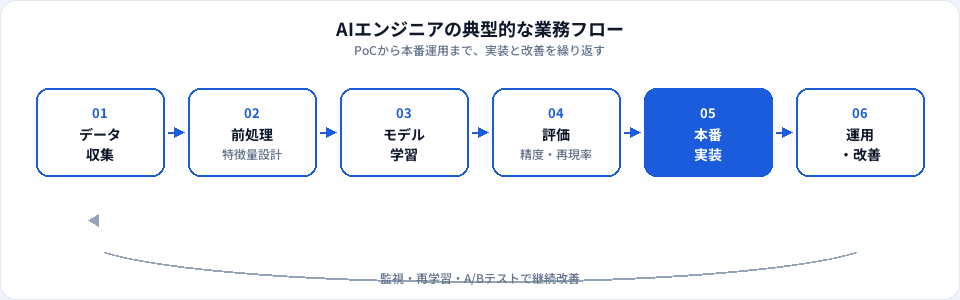

AIエンジニアは、機械学習や深層学習のモデルを設計・学習・評価し、本番環境で動かすエンジニア職です。ChatGPTのような生成AIツールを業務で使うだけのポジションとは役割が異なり、Pythonとクラウドを軸に「AIを動くシステムとして届ける」仕事が中心になります。本記事では、年収相場、必要スキル、関連職種との違い、未経験からの道のりを2026年6月時点の市場感覚で整理します。
資格・学習との関係
AIエンジニアを目指すうえで、用語と概念の整理は最初の関門です。G検定では、AI・機械学習・ディープラーニングの包含関係や、教師あり学習の考え方などが問われます。実装スキルとは別軸ですが、面接で「何ができるエンジニアか」を説明する土台になります。
よくある誤解は、「生成AIツールが使えればAIエンジニア」と考えることです。業務でChatGPTを活用するスキルは価値がありますが、採用で求められるのは多くの場合、データ処理・モデル学習・API連携・本番運用のいずれかです。資格はそのギャップを埋める学習の地図として使うのが現実的です。
基礎概念を演習で確認する
G検定：一問一答 TF-003（機械学習とAIの関係）、TF-004（ディープラーニングと機械学習）、TF-170（生成AI）
試験トップ：G検定対策 · 生成AIパスポート対策
AIエンジニアとは
AIエンジニア（AI Engineer）は、AI・機械学習モデルを実装し、プロダクトや業務システムに組み込むエンジニアの総称です。企業によって「機械学習エンジニア」「MLエンジニア」と呼び分けたり、生成AI領域ではLLM連携を担当するポジションを含めたりします。
研究職のように論文執筆が主目的ではなく、再現性のあるコード・パイプライン・APIとして価値を出す点がエンジニア職の特徴です。PoC（概念実証）で終わらせず、スケール・監視・再学習まで見据えるチームでは、MLOpsの知識も求められます。
また「AIエンジニア＝データサイエンティスト」と同一視されることもありますが、一般には実装・運用の比重が高い職種として捉えるのが実務的です。後述の比較表もあわせて確認してください。
仕事内容
会社・プロダクトフェーズによって差はありますが、典型的な業務は次のとおりです。

要件の技術翻訳
ビジネス課題を「分類・予測・推薦・生成」のどれで解くか整理し、精度とコストのトレードオフを説明する。
データ前処理
学習用データの収集・クレンジング・特徴量設計。品質問題がモデル性能を左右するため、ここに工数がかかることも多い。
モデル開発・評価
アルゴリズム選定、学習・検証、指標（精度・再現率・F1など）での評価。ベースラインとの比較が重要。
本番実装
API化、バッチ推論、リアルタイム推論のいずれかでサービスへ組み込み。レイテンシとコストを意識する。
生成AI連携（近年増加）
LLMのプロンプト設計、RAG（検索拡張生成）、エージェント連携、出力のガードレール設計など。
運用・改善
ログ監視、ドリフト検知、再学習、A/Bテスト。モデルはリリース後もメンテナンス対象になる。
必要スキル
求人票はバラつきますが、採用でよく見るスキルセットを整理します。
| 領域 | 具体例 | 重要度の目安 |
|---|---|---|
| プログラミング | Python（NumPy / pandas / scikit-learn）、Git | 必須に近い |
| 機械学習の基礎 | 教師あり・教師なし、過学習、交差検証、評価指標 | 必須 |
| 深層学習 | PyTorch / TensorFlow、CNN・Transformerの概要 | 職種・領域による |
| クラウド・インフラ | AWS / GCP / Azure、Docker、Kubernetes | 中〜上級で重視 |
| 生成AI | LLM API、RAG、プロンプト設計、評価 | 2026年時点で需要増 |
| コミュニケーション | 非エンジニアへの説明、要件のすり合わせ | 実務で差がつく |
数学（線形代数・確率統計）は深く問われないポジションもありますが、学習の挙動を説明できるレベルはあると安心です。G検定で基礎用語を押さえ、実装は個人プロジェクトやKaggleで積み上げる学習パターンが多いです。
年収相場
日本国内のAIエンジニアの年収は、経験年数・企業規模・株式報酬の有無で大きく変わります。当サイトの職種マスタでは、おおむね500万〜1,200万円を目安レンジとして掲載しています（2026年6月時点の一般的な相場感。個別のオファーは企業・職位により異なります）。
| 区分 | 年収の目安（日本・一般論） | 補足 |
|---|---|---|
| ジュニア（実務1〜3年） | 500万〜700万円前後 | 実装補助・既存モデルの改善から入るケースが多い |
| ミドル（3〜7年） | 700万〜1,000万円前後 | 設計から運用まで一人称で回せると上限が上がりやすい |
| シニア・リード | 1,000万〜1,200万円以上 | スタートアップのSO・外資ではさらに上振れする例も |
LLM・生成AIを扱うポジションは、同経験年数でも提示額が高めになる傾向があります。一方で「AI」と銘打った求人でも、実態がデータラベリングや単純運用のみの場合があるため、JD（職務記述）の中身を必ず確認してください。相場の要因分解・推移感はAIエンジニア年収の推移と相場の見方も参照してください。
キャリアパス
AIエンジニアから先に広がる代表的なルートです。
-
スペシャリスト深化
推薦・CV・NLP・生成AIなど特定領域の技術リード。アーキテクチャ設計や論文・OSSへの関与が増える。
-
MLOps / プラットフォーム
モデル配信・監視・Feature Storeなど、組織全体のML基盤を担う。インフラ寄りのスキルが中心になる。
-
テックリード・EM
複数エンジニアのマネジメント、採用・評価、技術選定。コードより組織づくりの比重が上がる。
-
AIプロダクト寄り
企画・PMと協業し、AI機能のロードマップを牽引。技術とビジネスの橋渡し役へ。
関連職種との違い
名称は会社ごとに混在します。面接準備では「自分がどの工程を担うか」で整理すると伝わりやすいです。
| 職種 | 主な焦点 | AIエンジニアとの違い（一般論） |
|---|---|---|
| 機械学習エンジニア | MLパイプライン・モデル実装 | ほぼ同義で使われることも多い。データエンジニアリング寄りのJDもある。 |
| データサイエンティスト | 分析・仮説検証・意思決定支援 | 統計・可視化・ストーリーテリングの比重が高い。実装はチーム分担も。 |
| データアナリスト | SQL・BI・レポーティング | モデル構築より業務KPIの可視化が中心。AIツール活用で差がつく領域も。 |
| 生成AIエンジニア | LLM・RAG・エージェント | AIエンジニアの中の専門分化。API連携と評価設計が主戦場。 |
| MLOpsエンジニア | CI/CD・監視・再学習基盤 | モデル精度より配信の信頼性・自動化が中心。 |
未経験からの道のり
ゼロから狙う場合の現実的なステップ例です。期間は個人差が大きく、6か月〜2年程度がよく聞く目安です。
-
基礎の言語化（1〜2か月）
Pythonの文法、G検定または同等のAI基礎用語。機械学習とディープラーニングの関係を説明できる状態にする。
-
実装の型を身につける（2〜4か月）
scikit-learnで分類・回帰の一連を回す。データ分割、評価指標、過学習への対処をコードで理解する。
-
ポートフォリオを1つ完成させる（1〜2か月）
GitHubにREADME付きで公開。再現手順・使用データ・限界の記載があると採用側は評価しやすい。
-
生成AI or クラウドを足す（任意）
LLM APIを使った小さなアプリ、またはAWS/GCP上でのデプロイ経験。求人と接続しやすい。
-
応募・インターン・副業
「未経験可」のジュニア枠、データ部門の横入り、受託の小規模案件など、入口は複数ある。
いきなり最先端のLLM論文実装を目指すより、小さく動くものを継続的に出す方が転職では評価されやすいです。
メリット・デメリット
| メリット | デメリット |
|---|---|
| 技術トレンドの中心に立て、市場需要が高い | ツール・フレームワークの更新が速く、学習コストが続く |
| 成果がプロダクトに直結しやすく、裁量も得やすい | データ品質・組織理解不足でPoC止まりになりやすい |
| リモート・フルリモートの求人が他職種より多い傾向 | 「AI」名目の求人と実務内容のギャップに注意が必要 |
| 生成AI領域では新規ポジションが増えている | 未経験枠は競争が激しく、ポートフォリオ差が出やすい |
よくある質問
AIエンジニアは未経験からなれますか？
可能なケースはありますが、Python・機械学習の基礎・実装経験のいずれかが求められることがほとんどです。生成AIツールの利用経験だけでは不十分な場合が多く、ポートフォリオや資格で基礎力を示す準備が必要です。
AIエンジニアとデータサイエンティストの違いは？
データサイエンティストは分析・仮説検証・意思決定支援の比重が高く、AIエンジニアはモデルの設計・学習・本番運用までの実装比重が高い傾向があります。企業によって役割名と実務内容が一致しないことも多いです。
G検定はAIエンジニアに役立ちますか？
はい。AI・機械学習・ディープラーニングの基礎用語と考え方を体系的に学べるため、未経験者の土台作りや面接での説明力強化に役立ちます。ただし実装力は別途Pythonやプロジェクト経験で示す必要があります。
AIエンジニアの年収相場はいくらですか？
日本では経験・企業規模・職位により幅がありますが、おおむね500万〜1,200万円前後が目安となることが多いです。生成AI・LLM領域の需要が高い職種では上限が上がりやすい傾向があります（2026年6月時点の一般的な相場感）。
文系出身でもAIエンジニアになれますか？
文系出身で活躍している例はありますが、プログラミングと機械学習の実装を自習で積み上げる必要があります。文系からAI職へのキャリアチェンジも参照してください。